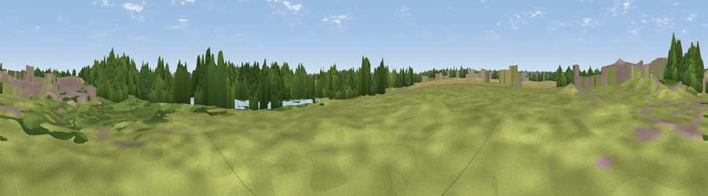

Viewpoint near Branton
#45416 in England · top 97% of its area beats it · near Branton · path 220 mWhere it is
The exact computed spot (SE 63757 00673). Click the marker for map links.
Public access: the nearest public right of way is about 220 m away — the final stretch may cross private land. Computed from Natural England's CRoW access layer and OpenStreetMap rights of way — not the legal definitive map. Always verify locally.
The view, rendered

A 360° render of this exact spot computed from the terrain model, tree cover and land cover — summer colours, afternoon light, calibrated against photographs of famous viewpoints. Real trees, hedges and buildings will differ in detail.
The panorama
Grey silhouette: terrain skyline in each direction (720 bearings, Earth curvature and refraction included). Dashed green: skyline with trees (+15 m) and buildings (+8 m) as obstacles. Blue strip: how far the ground is visible on each bearing.
Where the view opens
Wedge length = distance to the farthest visible ground on that bearing (vegetation-aware). Rings at 10, 25 and 50 km.
What fills the view
40% grassland · 36% woodland · 11% cropland · 8% built-up · 3% water
Angular shares of the visible panorama (visual magnitude), not map area. Landscape diversity 0.58 (0–1 Shannon).
Key numbers
More beautiful places nearby
The staircase of upgrades: each row has a higher view potential than everything closer. Driving times are estimates from straight-line distance, calibrated against real road routing — check an actual route before setting out.
| Place | Direction | Drive | Score |
|---|---|---|---|
| Viewpoint near Armthorpe | NNW · 4 km | ~9 min | 33.5 |
| Viewpoint near Loversall | W · 9 km | ~17 min | 34.4 |
| Harworth Colliery | SSW · 10 km | ~20 min | 51.8 |
| Viewpoint near Stainforth | NNE · 11 km | ~20 min | 53.2 |
| Viewpoint near Stainforth | N · 11 km | ~21 min | 61.9 |
| Viewpoint near Maltby | SW · 12 km | ~23 min | 70.7 |
| Viewpoint near Whitley | W · 32 km | ~49 min | 72.1 |
| Viewpoint near Wharncliffe Side | W · 33 km | ~50 min | 75.2 |
53.49890, -1.04034 · source: osm viewpoint · position refined by local search. Computed location — check access rights before visiting.